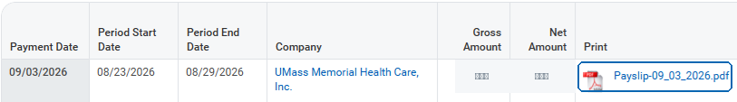

Check Your Retro Pay
Upload your pay stub (PDF) from 9/3/2026.
For most University Campus nurses, this is the pay stub that contains the main wage retro payment.
Then tap the PDF link in the Print column.
Show me what that looks like

No main wage retro on your 9/3 pay stub?
Why did I get retro pay?
The RN contract expired in April 2025, but negotiations continued long after that date. Nurses kept getting paid while the new agreement was being worked out, using the wage scale that was already in place.
When the new agreement was finally reached, it included raises that started back in time:
That meant many months of pay had already been calculated at rates that were now too low. Payroll had to go back through those earlier weeks, recalculate the pay that changes with your wage rate, and pay the difference. For most nurses, that catch-up payment appeared on 9/3/2026.
Night and Resource / Flow increases are also retroactive, but they are separate from the main wage retro payment. Their payment date has not been confirmed.
The amount on this statement looks right
Pay-by-pay results
| Pay type | Workday | Independent check | Result |
|---|
Overtime
Behind-the-scenes checks
Every calculation
The long version. Most people can happily ignore this.
| Week | Pay type | Workday | Independent check | Difference |
|---|